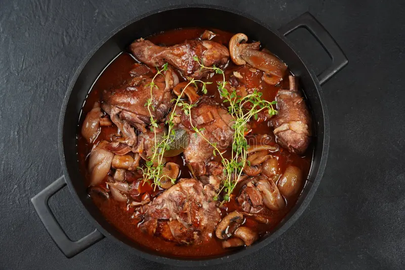
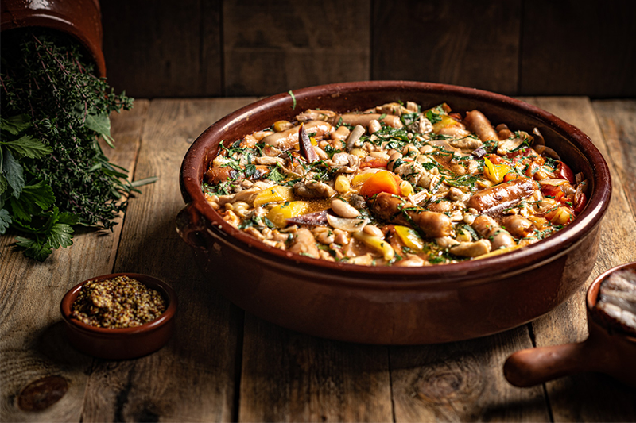
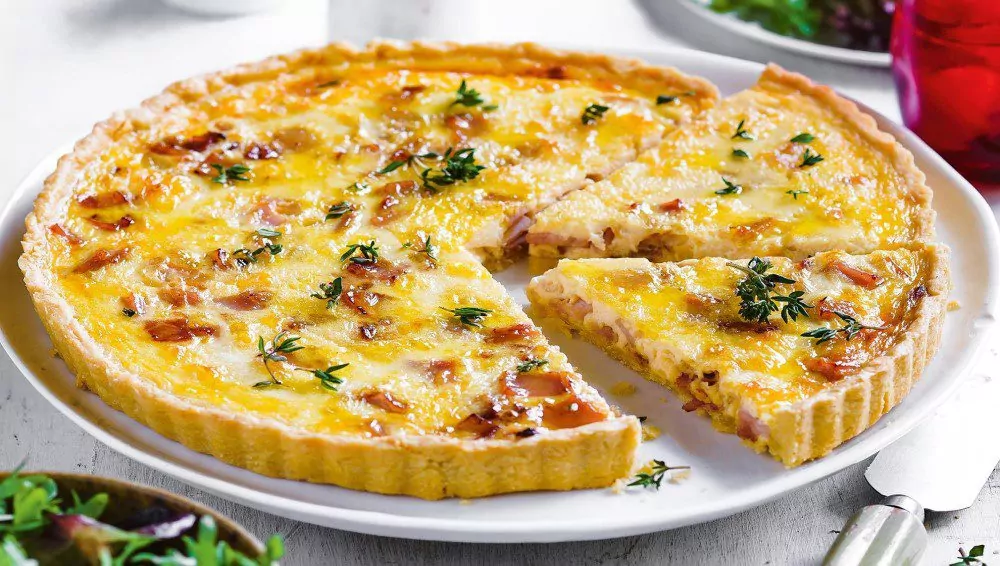

La gastronomía francesa es reconocida mundialmente como un símbolo de alta cocina, caracterizada por su sofisticación, técnica y elegancia. Desde el 16 de noviembre de 2010, ha sido catalogada por la UNESCO como Patrimonio Cultural Inmaterial de la Humanidad, destacando su importancia en la identidad cultural de Francia. Esta cocina se distingue por su diversidad regional, donde cada plato refleja la riqueza de los ingredientes locales y las tradiciones culinarias. Técnicas como el glaseado y el flambeado, junto con una presentación meticulosa, hacen que la gastronomía francesa no solo sea un deleite para el paladar, sino también una forma de arte que ha influido en cocinas de todo el mundo.
Coq au Vin

Este plato emblemático consiste en pollo marinado y cocido en vino tinto, junto con champiñones, cebollas y panceta. Su origen se remonta a la cocina rural francesa, donde se utilizaban ingredientes locales para crear un guiso sustancioso. Se dice que este plato se popularizó durante la Revolución Francesa, convirtiéndose en un símbolo de la gastronomía del país. El proceso de preparación implica marinar el pollo en vino tinto y hierbas, lo que le confiere un sabor profundo y característico. Tradicionalmente, se utiliza gallo, aunque en la actualidad es común emplear pollo debido a su mayor disponibilidad y ternura.
Cassoule

Originario del sur de Francia, específicamente de la región de Occitania, el cassoulet es un guiso de alubias blancas con carne de cerdo, salchichas y, a veces, carne de pato. Este plato refleja la tradición campesina y ha evolucionado a lo largo de los siglos, convirtiéndose en un símbolo de la gastronomía regional. El origen del cassoulet es objeto de debate, con varias ciudades, como Toulouse, Carcasona y Castelnaudary, que reclaman su invención. Históricamente, se dice que los romanos ya consumían un guiso similar en la zona de Narbona. La receta ha sido adaptada a lo largo del tiempo, incorporando ingredientes locales y técnicas culinarias tradicionales.
Ratatouille

Este platillo de verduras proviene del sur de Francia y combina ingredientes frescos como berenjenas, calabacines, pimientos y tomates. Su origen se remonta a la cocina campesina, donde se utilizaban las verduras de temporada para crear un plato nutritivo y sabroso. La preparación del ratatouille implica cocinar lentamente los vegetales en aceite de oliva, ajo y hierbas locales, lo que permite desarrollar una textura suave y un sabor profundo.
Quiche Lorraine

La Quiche Lorraine es un clásico de la gastronomía francesa, originario de la región de Lorena. Este platillo consiste en una tarta salada elaborada con una base de masa quebrada, rellena de una mezcla cremosa de huevos, nata y tocino. Su historia se remonta al siglo XVI, cuando se documentaron las primeras versiones de esta receta simple pero deliciosa, que ha evolucionado a lo largo del tiempo para convertirse en un símbolo de la cocina francesa.